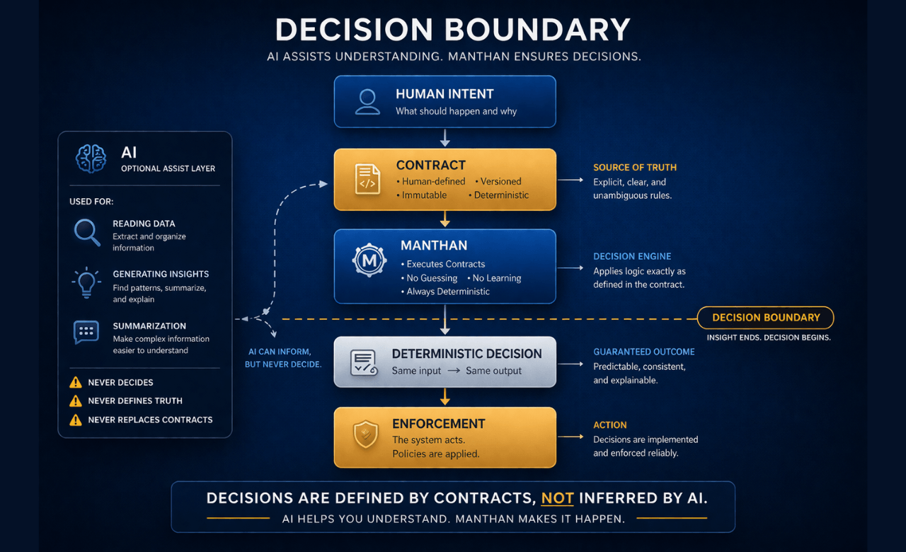
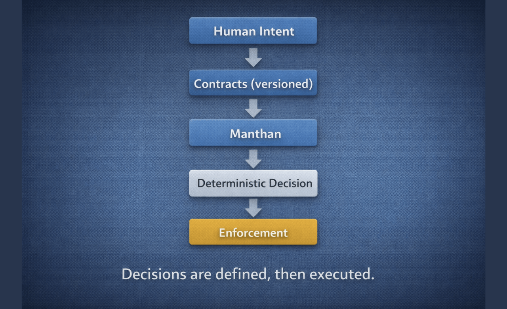
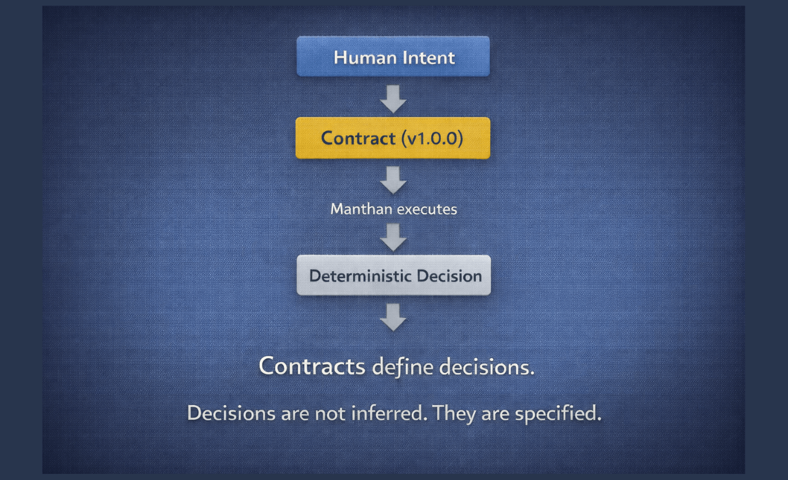
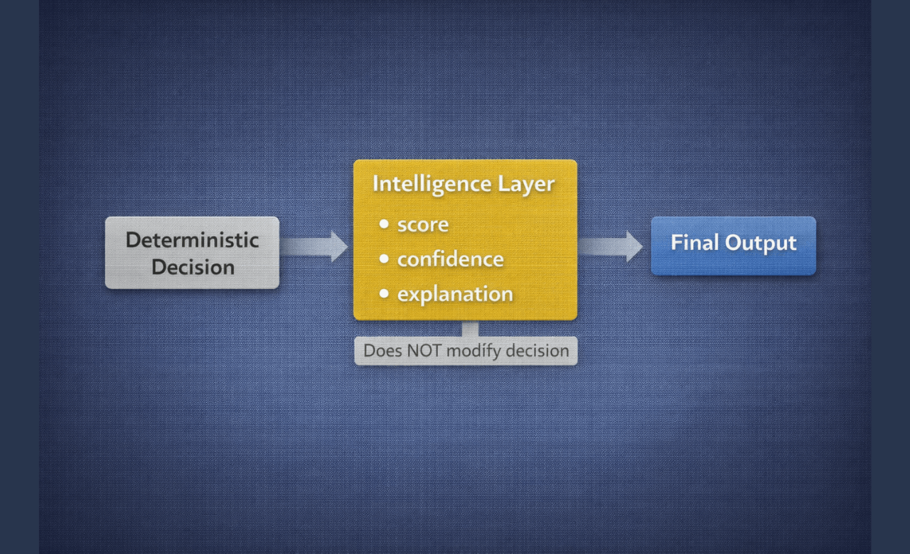

System
Manthan defines how decisions are made, validated, and enforced in software systems.
The Problem
AI systems operate in probabilistic generation.
- Same input → different outputs
- No traceability
- No enforcement
This makes them unreliable for decisions.

Generation vs Decision
AI operates in generation mode.
Manthan operates in decision mode.
- Generation → possibilities
- Decision → outcomes
Prompts generate.
Contracts decide.

Decision Boundary
AI is useful for ambiguity.
Decisions require certainty.
AI (Generation)
- Interpretation
- Exploration
- Ambiguity
Decision Systems
- Determinism
- Enforcement
- Guarantees
Crossing this boundary turns insight into decision.

System Model
A Manthan system follows a deterministic structure:
- Intent → defined as contracts
- Contracts → define decisions
- Decisions → executed deterministically
- Execution → enforced by the system

Contracts
Contracts define decisions explicitly.
- Versioned
- Immutable
- Deterministic
They are the source of truth.
Decisions are not inferred.
They are specified.

Intelligence Layer
Decisions are made first.
- Explanation
- Context
- Scoring
This layer does not influence decisions.
It explains decisions — it never makes them.

Outcome
Without deterministic decisions:
- Inconsistent outcomes
- No traceability
- No enforcement
With Manthan:
- Consistent decisions
- Full traceability
- Enforced outcomes
Reliable systems require deterministic decisions.